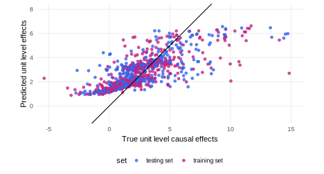
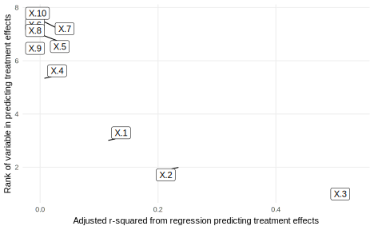
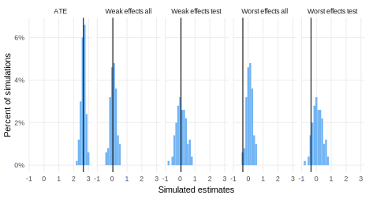

library(rdddr) # for helper functions
library(grf)
covariate_names <- paste0("X.", 1:10)
f_Y <- function(z, X.1, X.2, X.3, X.4, u)
z * X.1 + z * X.2 ^ 2 + z * exp(X.3) + z * X.3 * X.4 + u
get_best_predictor <-
function(data) select(data, estimate = var_imp) |> slice(1)
declaration_19.1 <-
declare_model(
N = 1000,
X = matrix(rnorm(10 * N), N),
U = rnorm(N),
Z = simple_ra(N)) +
declare_model(
Y_Z_1 = f_Y(1, X.1, X.2, X.3, X.4, U),
Y_Z_0 = f_Y(0, X.1, X.2, X.3, X.4, U),
tau = Y_Z_1 - Y_Z_0) +
declare_inquiry(handler = best_predictor,
covariate_names = covariate_names,
label = "best") +
declare_measurement(Y = reveal_outcomes(Y ~ Z)) +
declare_measurement(
handler = causal_forest_handler,
covariate_names = covariate_names,
share_train = 0.5
) +
declare_measurement(
handler = fabricate,
low_test = (test & (pred < quantile(pred[test], 0.2))),
low_all = pred < quantile(pred, 0.2)
) +
declare_inquiry(
ate = mean(tau),
worst_effects_all = mean(tau[tau <= quantile(tau, 0.2)]),
worst_effects_test = mean(tau[test & tau <= quantile(tau[test], 0.2)]),
weak_effects_all = mean(tau[low_all]),
weak_effects_test = mean(tau[low_test])) +
declare_estimator(Y ~ Z, inquiry = "ate") +
declare_estimator(Y ~ Z, subset = low_test,
inquiry = c("weak_effects_test", "worst_effects_test"),
label = "lm_weak_test") +
declare_estimator(Y ~ Z, subset = low_all,
inquiry = c("weak_effects_all", "worst_effects_all"),
label = "lm_weak_all") +
declare_estimator(handler = label_estimator(get_best_predictor),
inquiry = "best_predictor", label = "cf") 42 Discovery using causal forests
We declare a design in which a researcher examines a large set of continuous covariates to discover (i) which covariate best explains heterogeneity in the effects of a treatment and (ii) which subjects experiences the weakest or strongest effects. The design declaration clarifies the inquiries when the goal of the study is discovery and can be used to guide design decisions regarding how best to split data into training and testing sets.
In most designs that we have discussed, researchers have a clear idea what they are looking for when they begin the research. How big is some population? What is the size of some effect? But some research involves questions that are much more open in nature. We focus here on discovery research that has two types of more open questions. The first inquiry poses an open question of the form “what matters?” (rather than the more common closed question of the form “what is the effect of this on that?”). The second inquiry poses a question about an as-yet unspecified group — who are the people for whom effects are especially strong or weak?
We imagine a setting in which a researcher has access to a large group of covariates \(X\) and has conducted an experiment to assess the effects of \(Z\) on \(Y\). The researcher is interested in the heterogeneity of effects of \(Z\) as a function of variables in \(X\) and in poses two inquiries. First, which covariate in \(X\) best “explains” variation in the effect of \(Z\)? Second, what combination of values in \(X\) characterize individuals for whom effects are particularly weak?
Declaration 42.1 proceeds as follows.
For the model, we imagine a possibly complex function linking \(Z\) to \(Y\) in which the effect of \(Z\) depends nonlinearly on some but not all variables in \(X\). As always, this model can and should be altered to help understand whether diagnosis depends on the particular type of structure assumed.
We declare two inquiries beyond the standard average treatment effect. For the first inquiry we need to be specific about what we mean by “best explains.” We will imagine asking which covariate \(X\) produces the lowest conditional variance \(\mathbb{E}(\mathbb{V}(Y_i(1)- Y_i(0)|X_i = x))\). Specifically, we partition each covariate into quantiles and take the average variance in treatment effect across each quantile. We will call this the best_predictor inquiry and calculate it using the \(R^2\) from a fixed-effects model applied to the true treatment effects. The best_predictor function in rdddr calculates this estimand, dividing covariates into 20 quantiles by default.
There is both a simple and a more complex understanding of the second inquiry. The simple understanding is that we are interested in the average effect among the units whose effects are in the bottom 20% (say) of all effects. We will call this the worst_effects inquiry. This is a natural notion of the worst affected. But it is a very difficult quantity to estimate.
The more complex understanding involves examining the realized data to do our best to identify a set of units (say of size 20%) that we think will have weak effects, and with this set identified return to M and ask what is the average effect for this set. We will call this the weak_effects inquiry, to acknowledge the fact that the effects for this group may not be the worst effects. This data-dependent inquiry is more complicated to articulate theoretically, but it is more straightforward to estimate empirically.
We assume the data strategy is the same as for a simple two arm trial (see Section (two-arm-randomized-experiments?)).
This causal forests design gets its name from the answer strategy. The “causal forests” algorithm randomly partitions data into a training and testing group. Within the training group it repeatedly generates “trees” by repartitioning the covariates (generating “branches”) to identify subgroups (“leafs”) with similar treatment effects. At each step, partitioning is implemented to yield estimated minimum variance in treatment effects. Unit level predictions of treatment effects (in both the training and the testing sets) are then generated by combining estimates of effects for units over different trees (see Wager and Athey 2018 for full details of the approach). Our estimate of the best_predictor is based on the variable that is most frequently partitioned to reduce variance, though we note that this indicator was not designed to capture the variable that induces the greatest reduction in variance. Including it here allows us to illustrate the ability of diagnosis to assess the performance of an estimator for a task for which it was not designed.
To implement causal forests in DeclareDesign, we wrote a “handler” that calls a function from the grf (generalized random forests) package. This handler produces two types of quantities: estimates of unit level causal effects and the name of the variable that is most frequently partitioned to reduce variance (var_imp). Because the output includes a prediction for each unit it is natural to add the output to the primary data frame. For that reason, the causal forests estimation is introduced as data strategy step and not specifically in an answer strategy step. The estimates of the unit level causal effects are used in order to identify the weakly performing group (within the test set and within the full set) which is in turn used to calculate the two versions of the weak_effects estimands, one for the test set and one for the full sample. To accommodate these complexities, the final inquiry declaration takes place after the implementation of the causal forests algorithm.
Finally, we use regression to estimate the ATE as well as the weak effects and worst effects estimands using both the identified low performing group in the test set data and the identified low performing group in the full data. We assess the performance of these against both the weak_effects inquiry and the worst_effects inquiry.
Declaration 42.1 Random forests design
Before turning to diagnosis we can get a feel for the performance of the causal forest estimator by comparing the predicted effects for each unit generated by the estimator, with the actual unit level treatment effects generated by M, as shown in Figure 42.1.

We see that we get some traction — but we also get a lot wrong. Estimating unit level causal effects is hard. We see in particular that that the range of the predictions is narrower than the range of the true effects, which will mean that the average effects in the groups with the best or worst predicted effects will generally not be the same as the effects for the groups with the best and worst actual effects.
To see how the design is choosing the best predictor, we illustrate the adjusted r-squared for a regression predicting the treatment effect with a partitioning of each variable, as well as the rank of predictors given the r-squared number in Figure 42.2. We see that the third covariate X.3 has a very high adjusted r-squared, and is ranked first, and most of the covariates are bunched at a very low r-squared.

Diagnosis 42.1 Causal forests diagnosis
For the diagnosis we need to take account of the fact that the answers to one of the inquiries (“Which X accounts for the most variation in effects?”) should be treated as categorical. For this reason, we report the modal estimate and estimand, rather than relying on the average estimate and average estimand. We calculate the probability that we get the correct answer, rather than relying on bias. We illustrate the diagnosis in Figure 42.3.
most_common <-
function(x) {
ux <- unique(x)
ux[which.max(tabulate(match(x, ux)))]
}
discovery_diagnosands <-
declare_diagnosands(
correct = mean(estimate == estimand),
bias = mean(estimate - estimand),
rmse = sqrt(mean((estimate - estimand)^2)),
mean_estimate = mean(estimate),
modal_estimate = most_common(round(estimate, 1)),
mean_estimand = mean(estimand),
modal_estimand = most_common(round(estimand, 1))
)
diagnosis_19.1 <-
diagnose_design(declaration_19.1,
diagnosands = discovery_diagnosands) 
We see that we do very well in identifying the most powerful predictor of heterogeneity, correct nearly all of the time. (We are never “correct” for the continuous estimands, but we would never expect to be.) Our estimator for the effects for the weak group within the testing set is unbiased. This follows from the fact that we are in essence estimating the causal effect within a subgroup that has been selected without knowledge of their potential outcomes. Substantively the effects for this group are indeed considerably lower than the average treatment effects and so we have been successful in identifying units that experience weak effects on average and estimating the effects for these. Thus we have been successful for a version of both inquiries.
The other diagnoses sharpen our understanding of what questions cannot be so easily answered with this design. First we see that estimates of the effects for the weak performers do not do a good job of estimating effects for the worst performers. This highlights that the procedure can generate unbiased estimates for a group that does poorly but not the group that does most poorly. We can further see from the diagnosis that while we recover effects for the test group well, we have some bias when trying to estimate the effects for the weak performing set in the combined training and test data data. The reason for bias here is that training group units enter the worse performing set in part because of their realized outcomes (which helped define the set) and not just on the basis of pre-treatment features. The bias is small however—so small it is barely discernible in the histograms—and so the restriction of analysis to the training set only ultimately increases mean squared error here.
Overall the approach fares well and through diagnosis we get clarity over which quantities are well estimated. Modifications of this design can help us assess how sensitive performance is to types of stipulated models and choices about train-test splits.
42.1 Design examples
Bauer and Hohenberg (2021) uses a causal forests algorithm to explore the heterogeneous effects of a manipulation of the source (real or fake) of a political news. The average effect of a real (versus fake) source on belief in the facts reported in the article is positive, and it is more positive for those with greater trust in media and more political knowledge.
Green et al. (2022) study the effects of messages designed to increase vaccine intentions with a survey experiment. They apply a causal forests algorithm to uncover the possibly heterogeneous effects of the treatment depending on observed covariates like income, local disease burden, and political ideology, but find that responses to treatment are mostly homogeneous.